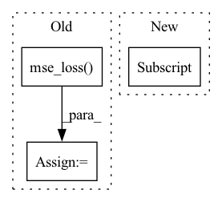

Pattern ID :28959

Before Change
target_q = self.target_model(next_state).max(1)[0] * (1-done) + reward
q = self.model(state)
q = q.gather(1, action.unsqueeze(-1)).squeeze(-1)
q_loss = F.mse_loss(q, target_q)
self.q_optimizer.zero_grad()
q_loss.backward()
if self.use_grad_clip:
After Change
def learn_on_batch(self, batch):
state, action, next_state, reward, done = batch["s"], batch["a"], batch["next_s"], batch["r"], batch["d"]
weights = batch["weights"] if "weights" in batch else torch.ones_like(reward).unsqueeze(-1)
action = action.long()
// update q net
In pattern: SUPERPATTERN
Frequency: 3
Non-data size: 3
Instances
Fragment ID: 85243808
Project Name: karlxing/rlcodebase
Commit Name: 3dff497e3c5cff01ef5340a2240d90eae0c5b8d5
Time: 2020-10-11
Author: jinweixing1006@gmail.com
File Name: rlcodebase/policy/dqn_policy.py
M Class Name: DQNPolicy
N Class Name: DQNPolicy
M Method Name: learn_on_batch(2)
N Method Name: learn_on_batch(2)
M Parent Class: BasePolicy
N Parent Class: BasePolicy
M File Name: rlcodebase/policy/dqn_policy.py
N File Name: rlcodebase/policy/dqn_policy.py
M Start Line: 38
M End Line: 47
N Start Line: 32
N End Line: 49
'>
Before Change
real_acts = self.vgg(real)
fake_acts = self.vgg(fake)
loss = F.mse_loss(
fake_acts[self._content_index],
real_acts[self._content_index]
)
if self.backward:
loss.backward(retain_graph=True)
After Change
loss = self.loss_fn(
fake_acts[block_index],
real_acts[block_index],
p
)
'>
Fragment ID: 85243809
Project Name: stomoya/animeface
Commit Name: cae4c79342cec56f04cc7b4a5064dda1227d68c5
Time: 2021-03-07
Author: blackie0110@gmail.com
File Name: implementations/gan_utils/losses.py
M Class Name: VGGLoss
N Class Name: VGGLoss
M Method Name: content_loss(5)
N Method Name: content_loss(3)
M Parent Class: Loss
N Parent Class: Loss
M File Name: implementations/gan_utils/losses.py
N File Name: implementations/gan_utils/losses.py
M Start Line: 364
M End Line: 378
N Start Line: 384
N End Line: 400
'>
Before Change
total_loss = 0.0
for (X, y) in tqdm(self.train_dataloader):
Z = self.model(X)
loss = F.mse_loss(Z, y)
self.optimizer.zero_grad()
loss.backward()
self.optimizer.step()
total_loss += loss.item()
After Change
device=device,
)
for (i, loss) in enumerate(self.losses):
weight = self.weight_per_loss[i]
loss_val += weight * loss(Z, y)
loss_val.backward()
self.optimizer.step()
total_loss_val += loss_val.item()
'>
Fragment ID: 85243805
Project Name: takuyashintate/tsts
Commit Name: f6b4e65e1ac0679b4951c401c8e2504e4fde4c4a
Time: 2021-08-17
Author: kmdbn2hs@gmail.com
File Name: tsts/trainers/trainer.py
M Class Name: SupervisedTrainer
N Class Name: SupervisedTrainer
M Method Name: step(1)
N Method Name: step(1)
M Parent Class: Trainer
N Parent Class: Trainer
M File Name: tsts/trainers/trainer.py
N File Name: tsts/trainers/trainer.py
M Start Line: 51
M End Line: 58
N Start Line: 61
N End Line: 76